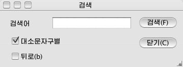
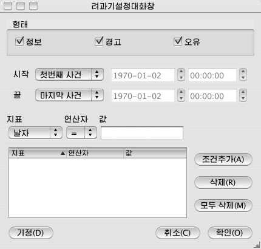

이 프로그람에는 기록의 검색, 려과기설정 및 려과, 기록재생기능들이 있습니다.
- 검색
<도구/검색>을 눌러 검색대화창을 엽니다.
|
 |
|
그림1. 검색대화창 |
검색어란에 검색어를 입력하고 검색단추를 누릅니다. 대소문자구별을 선택하면 대소문자를 구별하여 검색합니다. 뒤로를 선택하면 뒤방향검색을 진행합니다.
현재 열람하고 있는 페지에서부터 검색을 시작합니다.
<도구/다음검색>을 사용하여 검색된 위치에서부터 검색을 진행할수 있습니다.
- 려과기설정
<도구/려과기설정>을 눌러 려과기설정대화창을 엽니다.
|
 |
|
그림2.려과기설정대화창 |
려과조건들을 입력하고 확인단추를 누릅니다.
· 기록형태선택 : 대화창의 웃쪽에 있는 형태검사칸들을 선택하여 열람하려는 기록형태들만 지정합니다.
· 기록시간선택 : 기록의 시작시간과 끝시간을 첫번째사건, 마지막사건으로 또는 시간으로 지정할수 있습니다.
· 조건추가 : 기록지표와 연산자값을 선택하고 조건추가단추를 누르면 조건목록에 추가됩니다.
· 조건삭제 : 조건목록에서 조건을 선택하고 삭제단추를 누르면 조건목록에서 삭제됩니다.
- 려과
· 려과기사용 : <도구/려과>를 선택하여 려과기를 활성화합니다.
· 려과기해제 : <도구/려과>를 선택해제하여 려과기사용을 금지합니다.
- 기록재생
<도구/재생>을 눌러 현재 열람하고 있는 기록의 내용을 갱신합니다.